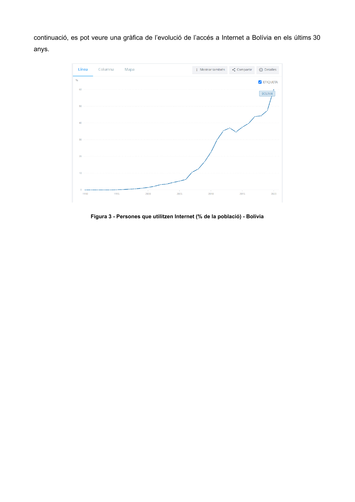

Informe Tècnic Inicial del Municipi de Pocona
Documentació oficial de camp recopilada sobre el terreny a Bolívia. L'anàlisi exhaustiva de la geografia, orografia, divisió territorial, marc legal i impactes socioeconòmics per fonamentar el posterior disseny de l'Arbre de Problemes i la solució de telecomunicacions.
Distància per carretera de muntanya des de la ciutat de Cochabamba.
Superfície del municipi amb relleu abrupte andí i valls aïllades.
Pocona, Conda, Chillijchi, Chimboata i Huayapacha.
Cobertura mòbil pràcticament nul·la fora del tram de l'antiga carretera.
1. Ubicació Geogràfica
El Municipi de Pocona és la tercera secció municipal de la Província de Carrasco del Departament de Cochabamba i es troba a una distància de 125 quilòmetres de la capital del Departament, Cochabamba.

Figura 1: Ubicació geogràfica de Pocona dins l'Estat Plurinacional de Bolívia i el Departament de Cochabamba. Fes clic per ampliar.
Caracterització dels Pisos Ecològics de Pocona
Aquest municipi es caracteritza per la presència d'una gran diversitat de pisos ecològics condicionats pels canvis bruscos d'altitud (des dels 2.200 m fins a més de 3.600 m):
Situada a les cotes més elevades de la serralada. Es caracteritza per un clima fred i ventós on es produeix principalment patata de manera intensiva.
Cotes intermèdies amb un microclima més temperat. Es caracteritza per la producció diversificada d'hortalisses, fruiters i blat de moro.
Zones baixes humides on es produeixen diversos tipus de cultius, els quals no es poden comercialitzar per la falta d'un camí que els permeti un accés segur als diferents mercats.
| Pis Ecològic | Climatologia i Relleu | Producció Agrícola Principal | Condicionant / Coll d'Ampolla Identificat |
|---|---|---|---|
| Zona d'Altitud | Alta muntanya (> 3.000 m), temperatures baixes, vent fort | Patata (cultiu intensiu tradicional) | Exposició a gelades i accessos pedregosos de difícil trànsit. |
| Zona de Valls | Microclima temperat, valls tancades entre cims | Hortalisses, arbres fruiters i blat de moro | Valls envoltades de parets de roca que bloquegen senyals de ràdio. |
| Zona Tropical | Humitat alta, vegetació exuberant, risc d'avingudes d'aigua | Varietat de conreus tropicals i fruita fresca | Manca total de camí segur que impedeix transportar la collita als mercats. |
2. Divisió Política i Administrativa
El municipi de Pocona té una extensió territorial de 880 kilòmetres quadrats aproximadament i està dividit administrativament en cinc cantons:

Figura 2: Mapa de divisió política i administrativa del municipi de Pocona, mostrant les comunitats i la xarxa hidrogràfica entre els cantons. Fes clic per ampliar.
3. Accés a les Comunicacions a Bolívia
El 2011, l'Organització de les Nacions Unides (ONU) va declarar l’accés a les telecomunicacions com un dret humà.
En la mateixa línia, la Constitució Política de Bolívia reconeix l'accés universal i equitatiu a les telecomunicacions (Article 20).
Malgrat aquest reconeixement legal explícit, a Bolívia l’accés a internet encara és un luxe i només un 60% de la població té accés. En aquests temps, la falta d'accés a internet frena les oportunitats de desenvolupament, ja que afecta directament l'educació, el comerç i la salut, entre d'altres àmbits essencials.
Evolució de l'accés a Internet a Bolívia (Últims 30 anys)
La gràfica històrica mostra com l'ús d'Internet a Bolívia va romandre pràcticament testimonial (per sota del 5%) fins a l'any 2008, experimentant després un creixement pronunciat concentrat en les àrees urbanes fins a assolir aproximadament el 60% actual.

Figura 3: Persones que utilitzen Internet (% de la població) a Bolívia al llarg dels últims 30 anys (Font: Banc Mundial / ITU). Fes clic per ampliar.
| Etapa Temporal | Taxa d'Accés (% Bolívia) | Context Tecnològic i Polític | Situació a l'Àrea Rural de Pocona |
|---|---|---|---|
| 1995 – 2005 | 0,1% – 5,0% | Connexions dial-up molt lentes, circumscrites a centres governamentals i universitaris de La Paz i Santa Cruz. | Totalment inexistent (0%). Sense electricitat estable. |
| 2006 – 2015 | 5,0% – 35,0% | Declaració de l'accés com a dret per l'ONU (2011) i Art. 20 Constitució de Bolívia. Desplegament inicial de 3G a capitals. | Inexistent a la vall. Cap empresa privada hi desplega xarxa. |
| 2016 – 2024 | 35,0% – 60,0% | Expansió del 4G/LTE i fibra òptica a l'eix troncal urbà. Més de la meitat del país ja té connexió, però amb forta escletxa territorial. | Pocona continua estancada (< 2% a les llars), generant una greu situació d'aïllament digital. |
4. Accés a les Comunicacions a Pocona
Les zones més afectades per la falta d’accés a les telecomunicacions són les zones rurals, com Pocona. Això és degut, principalment a dos fets estructurals:
A continuació es mostra el mapa real de cobertura mòbil del municipi de Pocona, on es pot constatar que és pràcticament nul·la, ja que només hi ha cobertura en alguns trams de la carretera antiga entre Cochabamba i Santa Cruz:

Figura 4: Mapa de cobertura mòbil cel·lular al municipi de Pocona. S'observa l'absència total de senyal al fons de les valls habitades i una cobertura molt puntual sobre la traça de l'antiga carretera. Fes clic per ampliar.
Impactes Socioeconòmics de la Manca d'Internet a Pocona
La falta d'accés a Internet en la comunitat de Pocona té impactes socioeconòmics molt diversos i devastadors en el dia a dia de la ciutadania:
La major part dels habitants de Pocona es dedica a l’agricultura i, principalment, al cultiu de la patata. La falta d’accés a les telecomunicacions dels agricultors disminueix la capacitat dels productors a fer créixer els seus negocis, ja que tenen més dificultats per contactar amb transportistes i comercials.
Malgrat que moltes escoles estan dotades d’equipament informàtic, aquestes no tenen accés a Internet. Això fa que els alumnes no puguin accedir a recursos educatius, com vídeos o materials didàctics interactius, generant desigualtats en l’aprenentatge i en la preparació pel món digital.
No totes les comunitats disposen de centre de salut i algunes persones han d’esperar la visita del metge, que acostuma a ser un cop a la setmana o, sinó, mobilitzar-se per arribar al centre de salut més proper, que en algunes comunitats es troba a més de 30 km de distància.
En casos d’emergència, com accidents, malalties greus o embarassos que es compliquen, els habitants no tenen forma de comunicar-se amb el seu centre de salut. Això provoca que el municipi tingui una esperança de vida baixa i un alt índex de mortalitat infantil.
El municipi de Pocona té una alta taxa de migració: moltes persones nascudes a la regió decideixen marxar cap a grans ciutats o altres països.
La falta de comunicació entre familiars que es troben en diferents regions provoca ansietat, preocupacions i sentiments d’aïllament en la població local.
| Àmbit Afectat | Realitat Documentada a l'Informe de Camp | Mecanisme Causa-Efecte | Solució que Aportarà la Nostra Xarxa WiMAX |
|---|---|---|---|
| Econòmic | Agricultura i patata com a eix econòmic central. | Manca de comunicació amb transportistes i mercats de Cochabamba = pèrdua de marge i dependència d'intermediaris. | Connexió de dades als punts comunals per coordinar rutes de recollida i preus de mercat justos. |
| Educació | Ordinadors presents a les escoles, però 0% connectivitat a Internet. | Impossibilitat d'accedir a recursos interactius i enciclopèdies = greu bretxa formativa digital en els joves. | Enllaç de banda ampla als centres escolars dels cantons per a plataformes educatives obertes. |
| Salut | Metge un cop per setmana; desplaçaments de més de 30 km; sense telèfon d'emergència. | Retards crítics davant complicacions en parts o accidents = baixa esperança de vida i alta mortalitat infantil. | Telemedicina directa entre el metge rural de Pocona i els especialistes de l'hospital de Cochabamba. |
| Social | Èxode massiu de joventut i incomunicació amb familiars emigrats. | Ansietat familiar, solitud i despoblament de les comunitats andines. | Canals de veu i missatgeria comunitària gratuïta per mantenir el vincle comunitari i familiar. |
Document Original de Camp (Arxiu)
Tot el contingut textual, mapes i gràfiques d'aquest apartat provenen de l'informe tècnic oficial de camp. Pots consultar el document original en format Google Docs o PDF si necessites descarregar-lo: